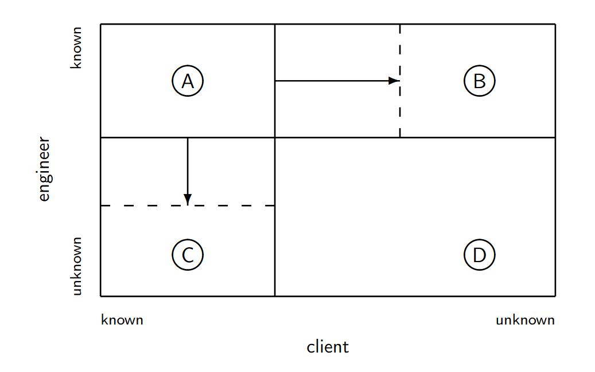

Teórica 04
Engenharia de Requisitos
Atividades
Inception
- Inicia-se com base na necessidade da existência do sistema;
- Sistemas à medida: Feitos para um grupo específico;
- Produtos: Para o mercado.
- Estuda-se a viabilidade do projeto.
- "Vai-se gastar \( x \) e ganhar \( y \)".
Elicitação ou Levantamento de Requisitos
- Responsável por gerir a forma como os requisitos são obtidos;
- As técnicas de elicitação devem:
- Identificar as fontes dos requisitos;
- Ajudar as diversas partes interessadas as descrever corretamente os requisitos.
- Precisa de interações profundas com os stakeholders;
- Técnicas de elicitação:
- Entrevistas;
- Estudos;
- Introspeção;
- Etnografia;
- Focus Group;
- Trabalho cooperativo;
- Análise do Domínio;
- Orientado a Objetos;
- Prototyping;
- Cenários;
- Modelação de Objetivos;
- Personas.
Elaboração
- Tem como objetivo analisar e classificar os requisitos elicitados, no entanto não pretende tratá-los;
- É comum organizar os requisitos em grupos coesos;
- O analista deverá intervir nos casos em que os requisitos:
- Não fazem sentido;
- Apresentação contradições entre eles;
- São incoerentes;
- São incompletos;
- São vagos.
Negociação
- A engenharia de requisitos necessita de comunicação e negociação entre os diversos stakeholders;
- É inevitável que situações de conflito sejam geradas;
- Assim, é necessário promover mecanismos de negociação entre os stakeholders, sendo que o seu resultado poderá ter um grande impacto na aceitação do produto final;
- Outra forma de gerir estes conflitos consiste na adoção de um modelo de prioritização.
Documentação
- Os documentos de requisitos servem como referência principal para as seguintes fases do processo de desenvolvimento;
- Um documento de requisitos é organizado de acordo com 2 diferentes perspetivas:
- Requisitos de Utilizador: descreve as expectativas e necessidades dos utilizadores;
- Requisitos de Sistema: estabelece a ligação entre o cliente e a equipa de desenvolvimento.
- A estrtura e formalidade da documentação deverá variar tendo em conta as características do sistema e os processos adotados.
Validação
- Tem por objetivo garantir que os requisitos levantados definem o sistema que o cliente deseja;
- É uma atividade de testing;
- Esta etapa pode ser realizada em simultâneo com outras atividades características da engenharia de requisitos.
Gestão
- O conjunto de requisitos encontra-se em constante mudança, assim, são necessários mecanismos de gestão de forma a avaliar o impacto que as mudanças nos requisitos terão no projeto final;
- Devem rejeitar-se as mudanças que impliquem:
- Um aumento significativo no custo;
- O adiamento da data de entrega final;
- Uma desvalorização do sistema por parte do utilizador.
- Assim, esta atividade pretende fornecer ajuda à equipa de desenvolvimento para identificarem, controlarem e gerirem os requisitos e as suas mudanças.
Desafios e Problemas
Dificuldades
- Pretende caracterizar o problema em mãos com rigor;
- Problemas de comunicação entre os engenheiros de requisitos e os utilizadores são comuns;
- Geralmente, os utilizadores apresentam dificuldades a expressar as suas necessidades reais de uma forma concreta e percetível;
- Em muitas ocasiões, os utilizadores apenas têm uma vaga ideia daquilo que pretendem.
Dificuldades e Soluções
- Dificuldade: O cliente não é capaz de verbalizar aquilo que pretende;
- Solução: Observar o cliente a utilizar a aplicação em contexto real.
- Dificuldade: O cliente não reparou que explicou o problema de forma incorreta até receber a solução que não o resolve;
- Solução: Antes de se iniciar o desenvolvimento de uma possível solução, deve verificar-se se o problema está bem formulado e corresponde à realidade.
- Dificuldade: O engenheiro acredita saber mais acerca dos problemas que o cliente em si.
- Solução: Deixar que o engenheiro sinta as dificuldades dos utilizadores em contexto real.
Johari Window
